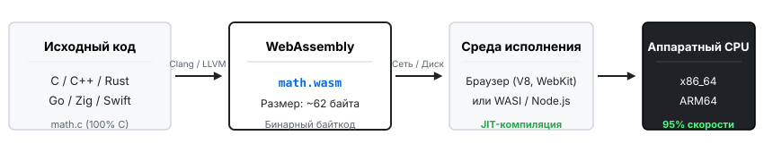
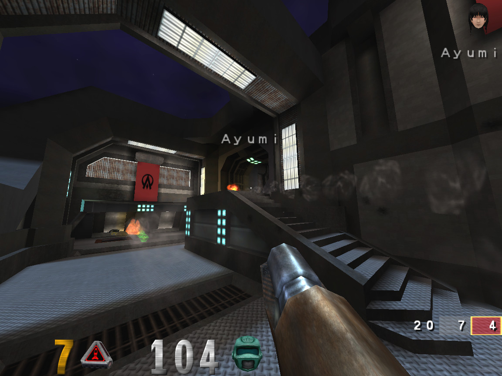
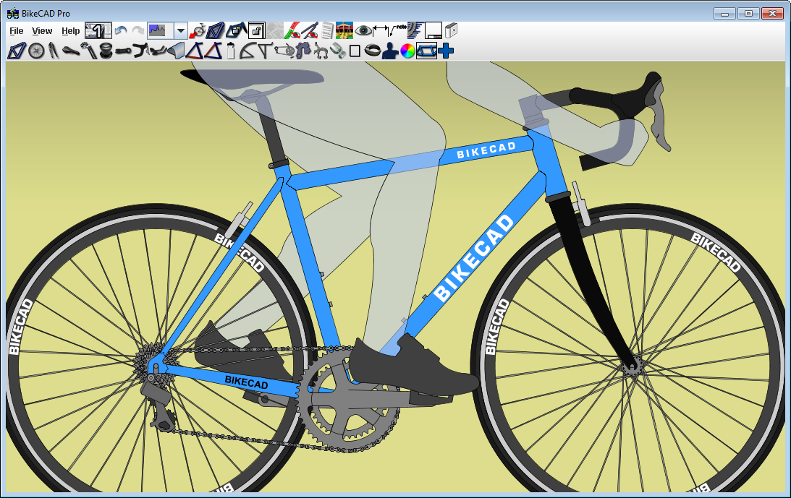
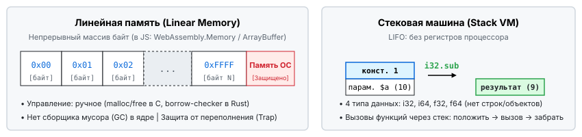

Архитектура низкоуровневой виртуальной машины, анализ применения и перспективы

Низкоуровневый язык команд конкретного процессора (x86, ARM). Прямая работа с физическими регистрами CPU и памятью компьютера.
Переносимый бинарный машинный код для абстрактной виртуальной машины. Независим от железа, выполняется везде с защитой памяти.
Web — безопасность и работа в любых браузерах. Assembly — машинный байткод с околонативной скоростью (~95% C++).
Flash Player (1996–2020): закрыт из-за проблем безопасности
Google (Chrome), Mozilla (Firefox), Apple (Safari) и Microsoft (Edge) впервые в истории объединились ради создания единого открытого стандарта после 20 лет браузерных войн.
Все 4 основных браузерных движка одновременно включили поддержку WebAssembly по умолчанию без необходимости активации флагов.
Консорциум W3C официально утвердил WebAssembly в статусе 4-го языка веба — наряду с HTML, CSS и JavaScript.

Порты id Tech (Doom 3, Quake), Unreal Engine, Unity: C++ код компилируется в Wasm + WebGL/WebGPU. 60 кадров/с без установки!

Вычисления триангуляции сеток, расчеты сопротивления материалов и рендеринг векторных сплайнов без зависания интерфейса браузера.

Один непрерывный массив байт (ArrayBuffer). Изолирован от ОС. Попытка выхода за пределы вызывает аппаратный Trap.
В ядре базового Wasm нет сборщика мусора! Управление ручное: в C через malloc/free, в Rust через borrow-checker.
Строгая статическая типизация: i32, i64, f32, f64. Нет встроенных типов строк или объектов (только сырые байты).
В отличие от процессоров x86/ARM, в виртуальной машине Wasm нет регистров общего назначения. Все команды оперируют вершиной стека (LIFO):
local.get $a ;; положить 'a' в стек
local.get $b ;; положить 'b' в стек
i32.add ;; сложить: забрать a, b -> положить (a + b)Модуль тотально изолирован: он не имеет прямого доступа ни к экрану, ни к DOM, ни к диску или сети. Взаимодействие возможно только через явные функции-импорты хоста (Capability-based).
.wasm — бинарный компактный байткод для машин.
.wat — текстовый человекочитаемый формат на S-выражениях (Lisp-синтаксис) для отладки и дизассемблирования.
// Рекурсивное вычисление факториала
int factorial(int n) {
if (n <= 1) return 1;
return n * factorial(n - 1);
}# Сборка через LLVM/Clang в 32-битный Wasm
clang --target=wasm32 -O3 -nostdlib \
-Wl,--no-entry -Wl,--export-all \
-o math.wasm math.c(module
(func $factorial (param $n i32) (result i32)
local.get $n ;; положить n в стек
i32.const 1 ;; положить 1 в стек
i32.le_s ;; проверка: n <= 1 ?
if (result i32) ;; если да (базовый случай):
i32.const 1 ;; вернуть 1
else ;; иначе (рекурсия):
local.get $n ;; положить n
local.get $n ;; положить n
i32.const 1 ;; положить 1
i32.sub ;; вычесть (n - 1)
call $factorial ;; рекурсивный вызов
i32.mul ;; умножить n * fact(n-1)
end)
(export "factorial" (func $factorial)))// Загрузка и вызов модуля в браузере
const resp = await fetch('math.wasm');
const { instance } = await WebAssembly.instantiate(
await resp.arrayBuffer()
);
const res = instance.exports.factorial(10);
console.log(res); // 3628800# Запуск через Node.js в терминале Linux
$ node presentation/demo/run_node.js
[Wasm Runtime] Загрузка math.wasm (62 байт)
> 10! = 3628800 (выполнено в Wasm VM)
В этот слайд внедрен настоящий 62-байтный модуль math.wasm:
Стандартизированный POSIX-подобный системный слой с моделью Capability-based Security: модуль физически изолирован и получает доступ только к явно выданным файлам и сокетам.
Бесшовная интеграция языков: модуль на Rust напрямую взаимодействует с кодом на Go или Python без написания сложного C FFI.
Финализирована в 2023–2024 гг. Дает языкам со сборщиком мусора (Dart, Kotlin, Java) нативный доступ к GC браузера. (Пример: Flutter Web на Wasm стал работать в 2–3 раза плавнее!).
128-битные инструкции и многопоточность на всех ядрах CPU для локального инференса нейросетей прямо на устройстве пользователя.